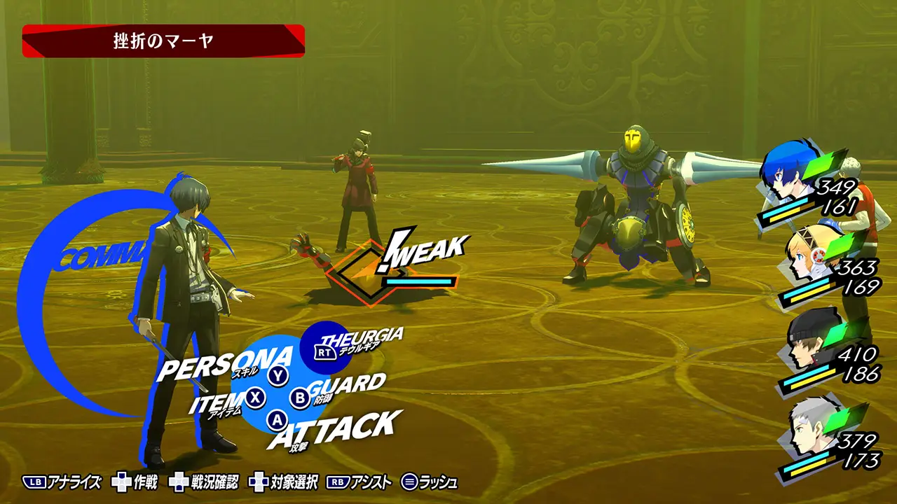
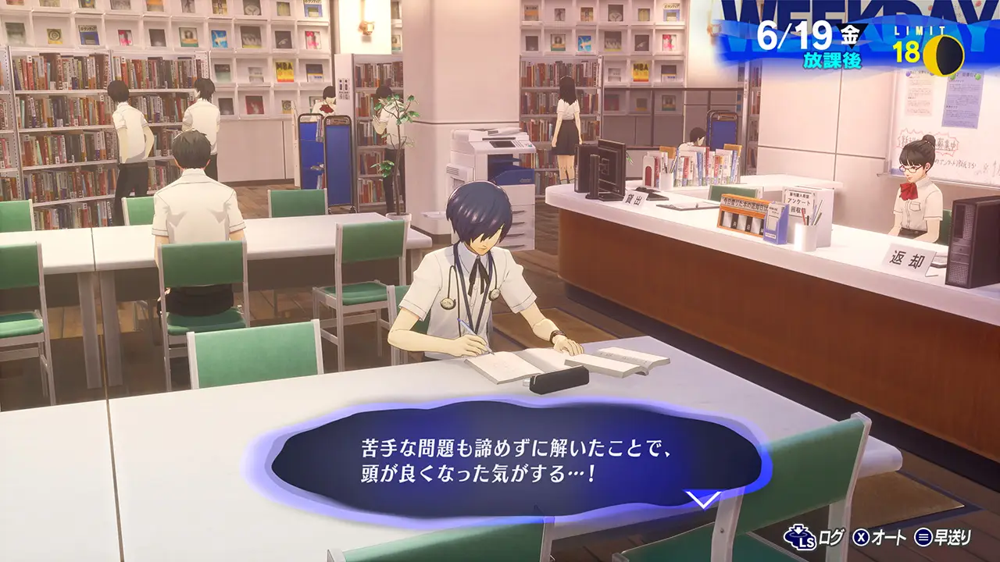

Game Systeam
遊戲系統
Battle
戰鬥系統
攻擊敵人弱點讓敵人倒地，就會發生可以繼續攻擊的1MORE。當場上所有敵人都倒地時，即可發動總攻擊。
也採用了《女神異聞錄５》中獲得好評的直接指令與助攻功能，在1MORE時可將行動機會交付給夥伴的換手，在本作品中則是以全新的輪轉之姿登場！
特別技能「降神」作為本作品的全新戰略，使用後將釋放出有別於通常攻擊的強力技能。

Daily Life
日常生活
在日常生活中，主人公的「學力」、「魅力」「勇氣」這三種「人格指數」將會受到考驗。透過用功讀書或打工來提升這些指數，就能使用原本無法利用的設施，或是變得能夠與他人建立社群。
在宿舍生活中與夥伴們一同度過時光可獲得「特性」，這是在戰鬥中非常有用的被動技能。
